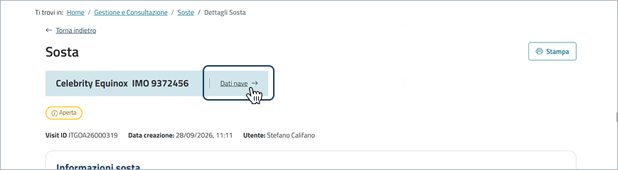
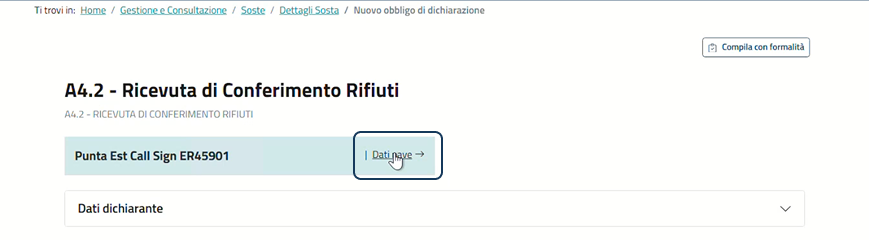
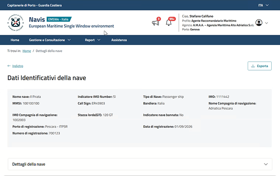
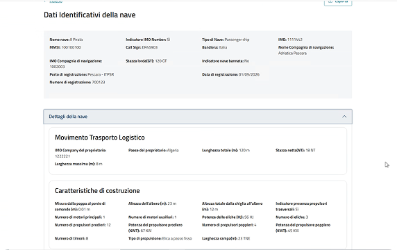
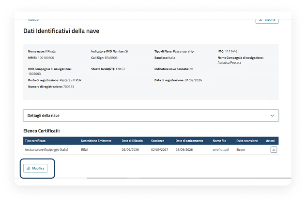
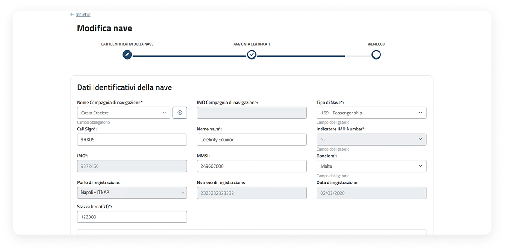

Anagrafica nave
Il portale delle Smart Guide è uno spazio digitale che raccoglie risorse pratiche e aggiornate in un unico ambiente intuitivo. Strumenti chiari e organizzati per organizzarti e trovare subito ciò che ti serve.
03.
Modifica anagrafica nave
Una panoramica sul flusso di modifica dell'anagrafica nave.
Modifica di un'anagrafica nave
Punti di accesso per modificare un'anagrafica nave
L'utente ha la possibilità di visualizzare i dati anagrafici di una nave e modificarli, selezionando il link "Dati nave", presente all'interno di:
Dichiarazione di Porto Base

Soste fuori abbonamento e per unità da diporto

Fascicoli e soste in abbonamento
Obblighi di dichiarazione

Dati identificativi della nave
All'interno del dettaglio l'utente può visualizzare i dati identificativi della nave.

Dettagli della nave
L'utente può visualizzare i dati relativi al dettaglio della nave espandendo il relativo accordion.

Modifica dati nave
In fondo alla pagina di dettaglio, per avviare il processo di modifica cliccare il pulsante "Modifica".

Modifica dati anagrafica nave
All'interno della pagina di dettaglio in modalità Modifica, il processo di aggiornamento delle informazioni seguirà lo stesso flusso guidato a step descritto nel flusso di "Censimento nave non presente in anagrafica".
Focus su "Step per censire una nuova nave" a pagina 17